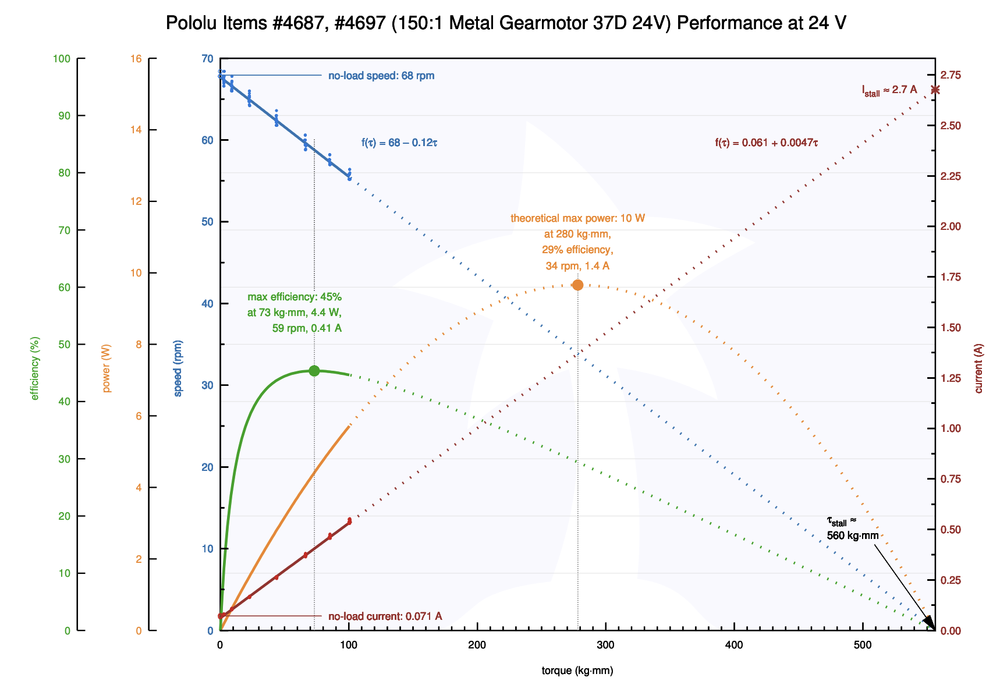

Results & Reflections
Our automatic cheese grater successfully compressed and grated hard cheese blocks with minimal user effort. The lead screw mechanism provided consistent force, and the electronics performed reliably throughout testing.
We measured a maximum compression force of 25N and a full compression cycle time of 45 seconds for a 25mm stroke. The system operated safely, with all moving parts enclosed and the user interface limited to a single button.
Performance Graph
Conclusion & Future Work
This project demonstrates that robust, safe, and affordable kitchen automation is possible with careful design and integration. In the future, we hope to add additional safety interlocks, improve the enclosure, and explore grating other foods.